Charles I. Jones & Christopher Tonetti, May 2026, Version 0.5
Jones & Tonetti : Past Automation and Future A.I.: How Weak Links Tame the Growth Explosion
AI가 경제성장을 폭발시킬 수는 있지만, 그 속도는 자동화되지 않은 “약한 고리”에 의해 늦춰진다.
이 자료는 논문의 주요 공식, 그림, 표를 기반으로 핵심 논리를 쉽게 설명한다.
1. 저자와 공신성
이 논문의 저자는 스탠퍼드대학교 경영대학원에서 장기 경제성장과 기술혁신을 연구하는
두 거시경제학자, 찰스 I. 존스(Charles I. “Chad” Jones)와
크리스토퍼 토네티(Christopher Tonetti)이다. 두 사람 모두 Stanford GSB와
NBER 소속으로 논문에 명시되어 있다.
Charles I. “Chad” Jones
Stanford GSB STANCO 25 Professor of Economics · NBER Research Associate
찰스 I. 존스는 현대 성장경제학의 대표 연구자다. 장기 성장론, 아이디어 생산함수, 연구생산성 하락, 인구와 성장, AI의 거시경제 효과를 연결해 왔다.
Harvard 경제학 A.B., MIT 경제학 Ph.D.
Are Ideas Getting Harder to Find?로 연구생산성 저하 문제를 실증적으로 제기.
The End of Economic Growth?에서 인구 감소와 아이디어 생산의 관계를 분석.
The AI Dilemma에서 AI의 성장 편익과 실존적 위험을 함께 모형화.
이번 논문의 약한 고리, 내생적 성장, 아이디어 생산 자동화 해석의 이론적 축.
Christopher Tonetti
Stanford GSB Associate Professor of Economics · NBER Research Associate
크리스토퍼 토네티는 기술 확산, 기업의 기술 채택, 데이터의 비경합성, 동태 거시모형을 연구하는 거시경제학자다.
Columbia 경제학·수학 학사, New York University 경제학 Ph.D.
Equilibrium Technology Diffusion, Trade, and Growth로 기술 확산과 성장의 일반균형 효과를 분석.
Reconciling Models of Diffusion and Innovation으로 혁신과 확산 모형을 연결.
존스와 함께 AER 논문 Nonrivalry and the Economics of Data를 발표.
이번 논문의 기술 확산, 데이터·비경합성, 산업별 자동화율 정량화와 연결.
연구 축
존스의 강점
토네티의 강점
이번 논문에서의 결합
장기 경제성장
아이디어와 인구가 성장률을 결정하는 구조
기업의 기술 채택이 총성장으로 이어지는 경로
자동화가 미국 장기 TFP 성장에 기여한 정도를 성장회계로 추정
약한 고리
보완적 투입요소와 경제발전의 병목 연구
기술 확산이 불완전할 때 생기는 생산성 격차 분석
자동화되지 않은 소수 과제가 전체 산출을 제약한다는 핵심 논리
아이디어 생산
연구생산성, 내생적 성장, AI 성장 폭발 조건
아이디어와 기술의 확산, 비경합적 자산
상품 생산뿐 아니라 아이디어 생산도 자동화되는 모형 구축
데이터와 측정
거시 장기자료와 간결한 성장모형
산업·기업·가계의 미시자료와 정량모형
BEA, BLS, USDA 자료와 LLM 기반 업무 측정을 결합
공신성과 한계는 함께 봐야 합니다.
이 파일은 2026년 5월 Version 0.5 작업논문이고, 부록 일부 증명은 아직 완성 전이다.
특히 LLM으로 업무별 자동화율을 추정한 부분은 창의적이지만, 측정 타당성, 프롬프트 재현성,
대체탄력성 σ=0.2의 민감도를 별도로 검토해야 한다.
AI 생산성의 관건은 “업무 몇 개를 자동화했는가”가 아니라 “마지막 약한 고리와 아이디어 생산까지 자동화할 수 있는가”이다.
AI가 일부 일을 아주 잘해도 전체 경제는 아직 자동화되지 않은 필수 과제에 묶인다.
서비스, 현장 작업, 신뢰와 책임, 조직 의사결정, 연구 방향 설정 같은 약한 고리가 남으면
AI의 빠른 발전이 GDP 전체로는 천천히 전달된다.
1자동화는 중요하다
과거 성장은 사람이 하던 과제를 빠르게 개선되는 기계가 대신하면서 만들어졌다.
2하지만 병목이 있다
경제는 여러 필수 과제의 결합이다. 한 과제가 느리면 전체 산출이 제약된다.
3아이디어가 승부처다
AI가 연구와 아이디어 생산까지 자동화하면 성장 동학이 달라진다.
2. Infographic of The_AI_Growth_Paradox
업로드된 인포그래픽과 The_AI_Growth_Paradox.pdf는 논문의 메시지를 강의용으로 압축한 자료다.
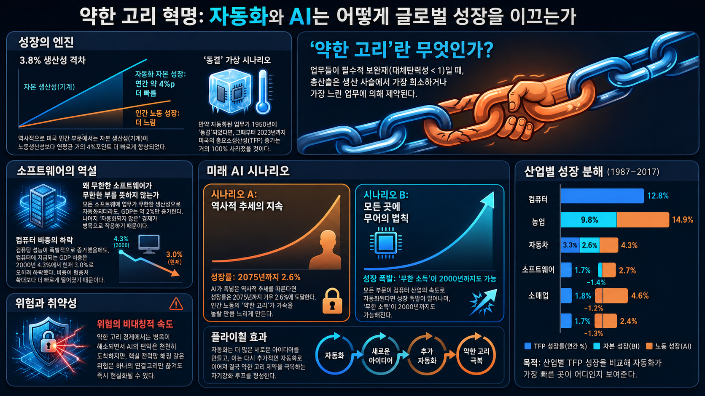
업로드 이미지. 논문의 핵심 메시지를 한 장으로 정리한 강의용 인포그래픽.
이 그림의 핵심:
기계 과제 생산성은 노동보다 빠르게 개선된다. 하지만 경제 전체는 가장 느리거나 희소한 필수 과제에 의해 제약된다.
AI가 소프트웨어를 크게 개선해도 곧바로 무한한 부를 만들지는 못하고, 약한 고리를 순차적으로 제거할 때 성장 가속이 커진다.
PDF 슬라이드 전체 보기
PDF 슬라이드 전체 이미지는 assets/jones-tonetti/paradox_pdf/에 저장되어 있다.
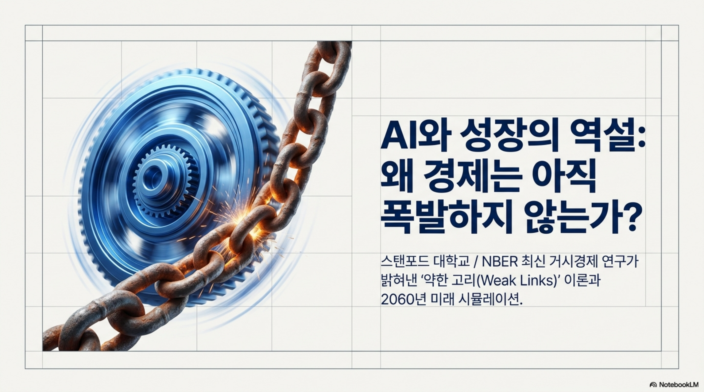
Slide 1
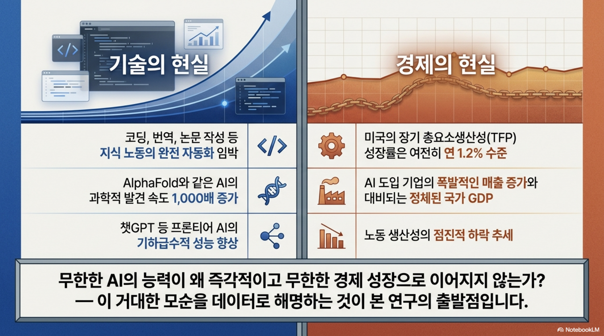
Slide 2
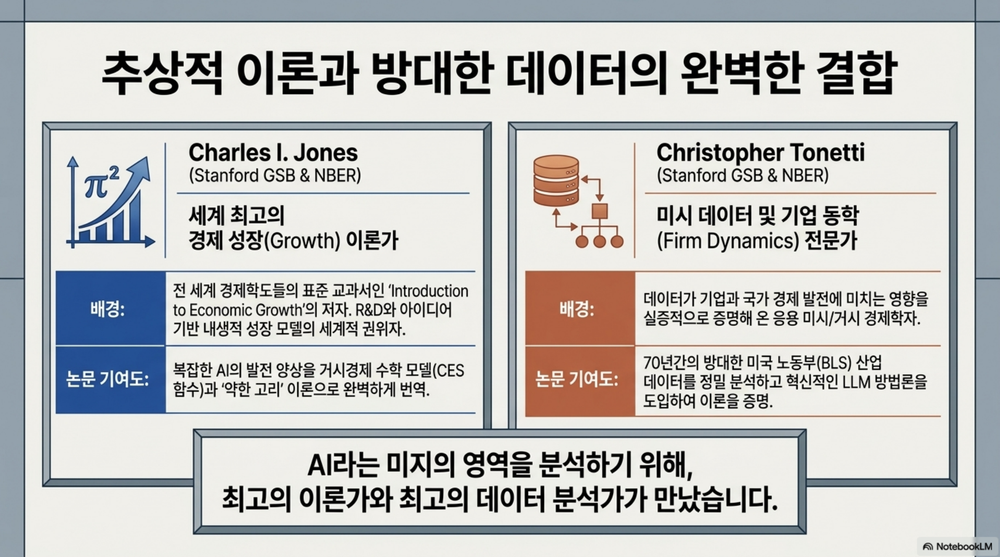
Slide 3
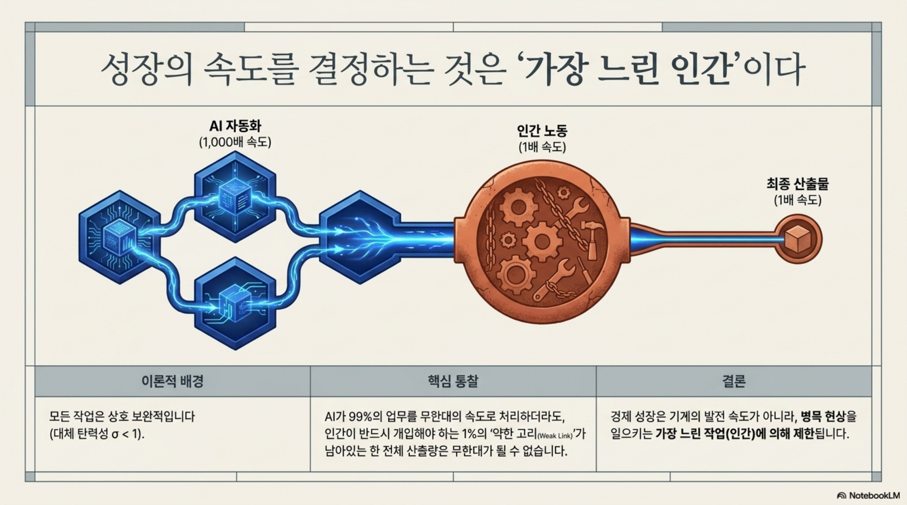
Slide 4
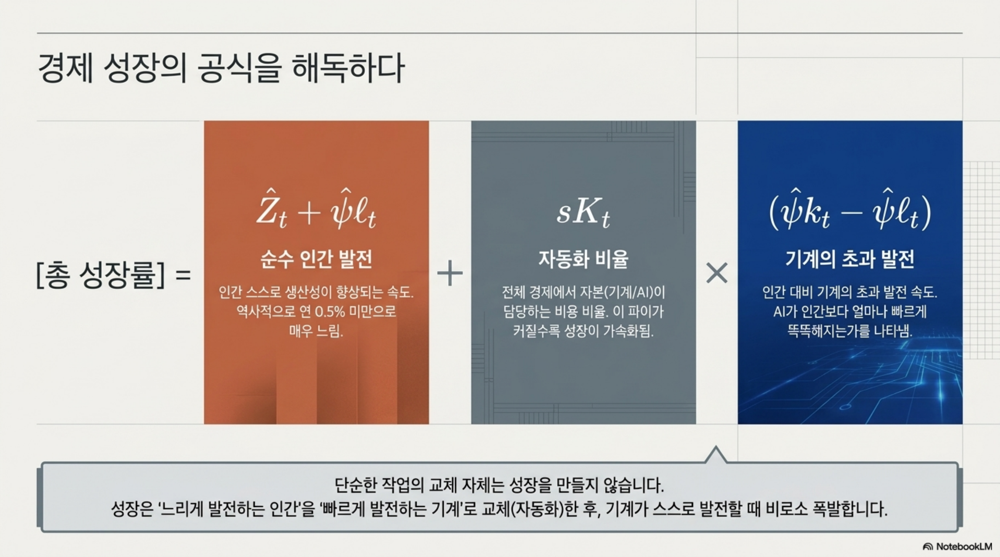
Slide 5
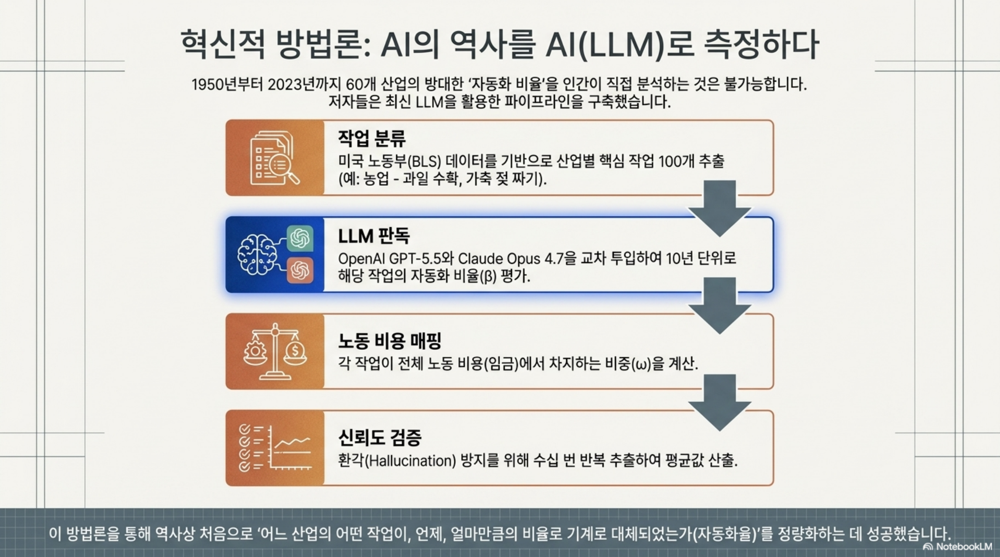
Slide 6
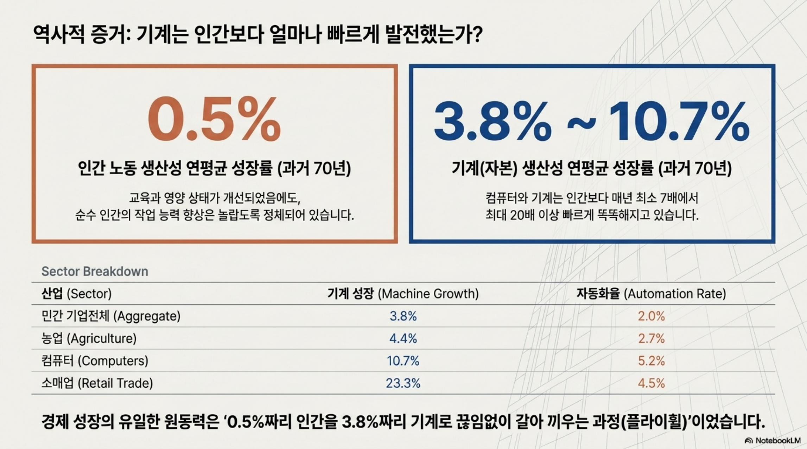
Slide 7
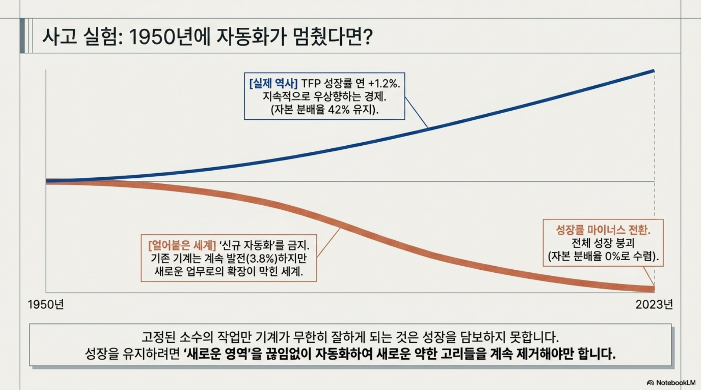
Slide 8
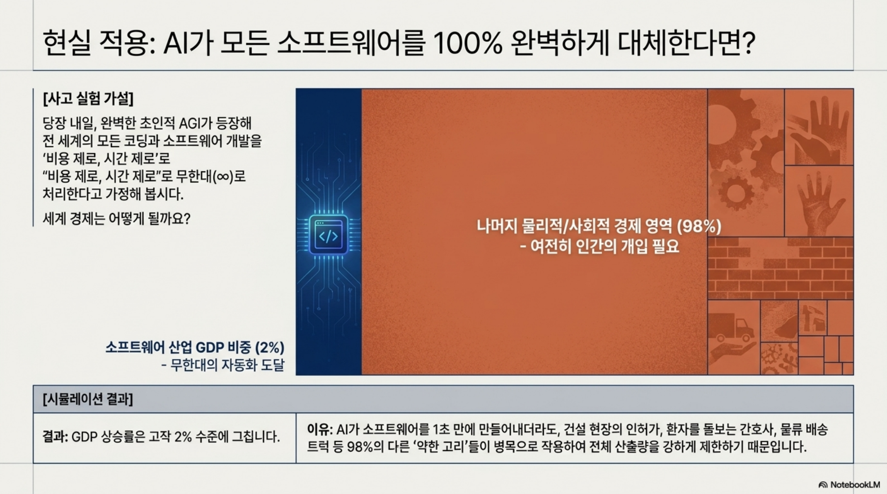
Slide 9
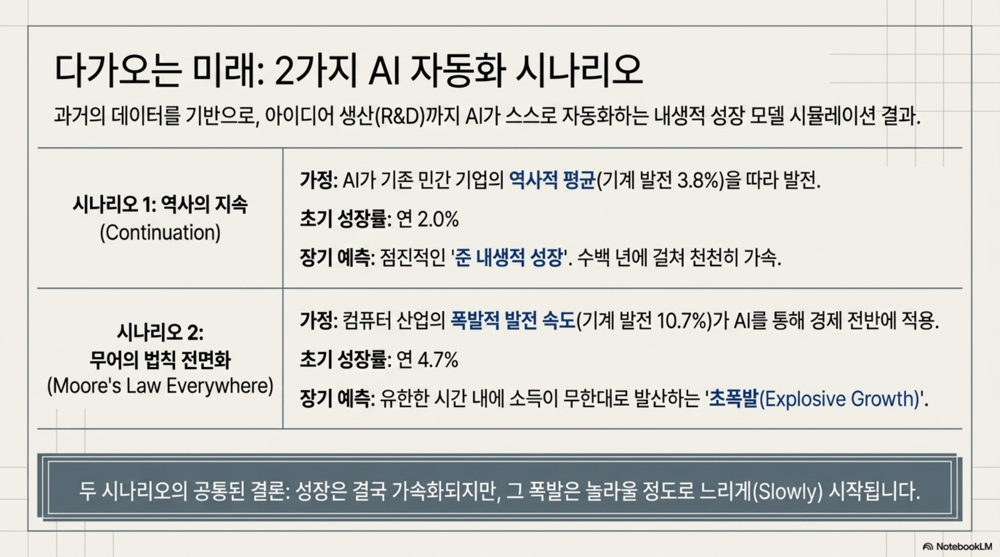
Slide 10
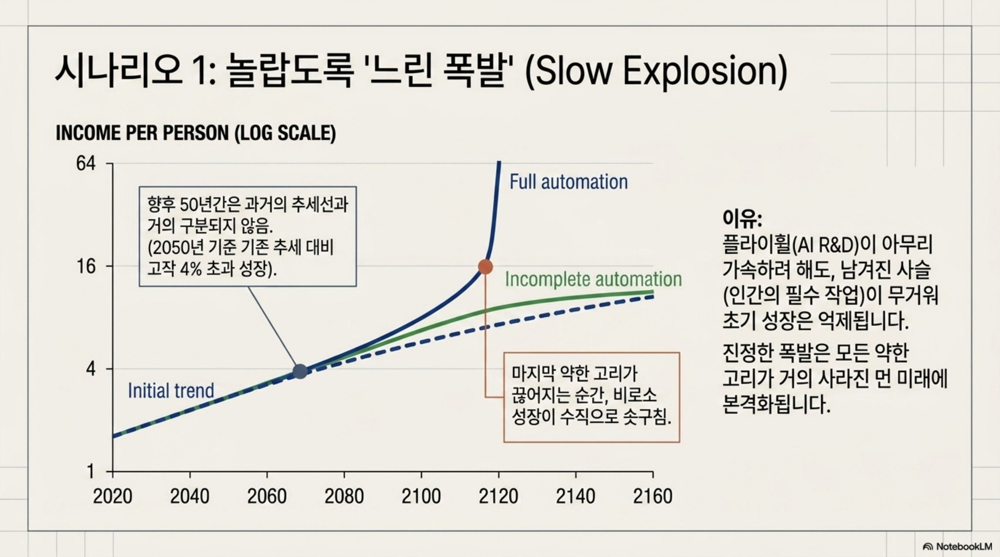
Slide 11
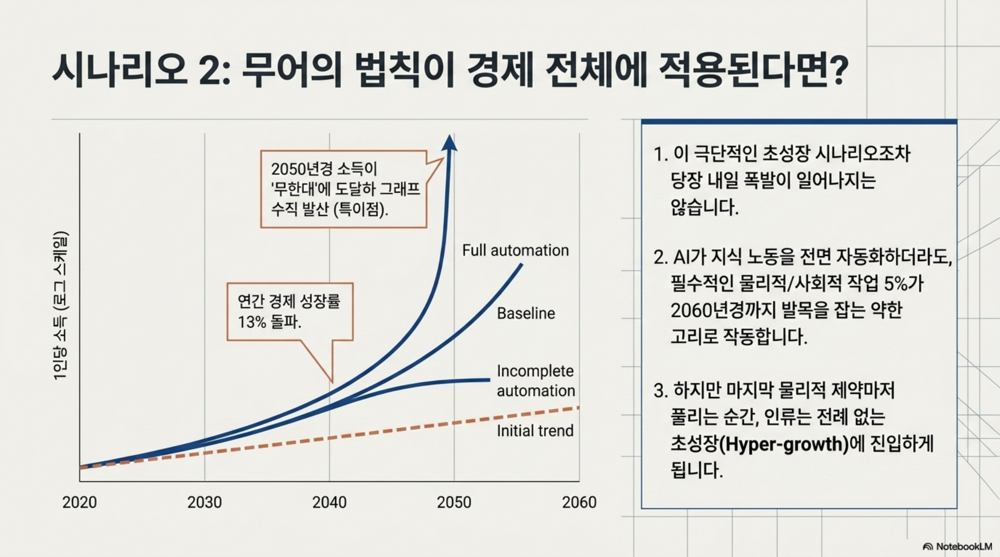
Slide 12
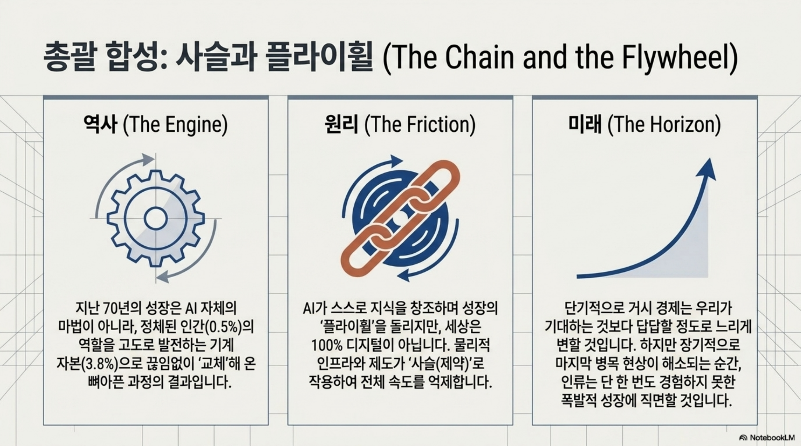
Slide 13
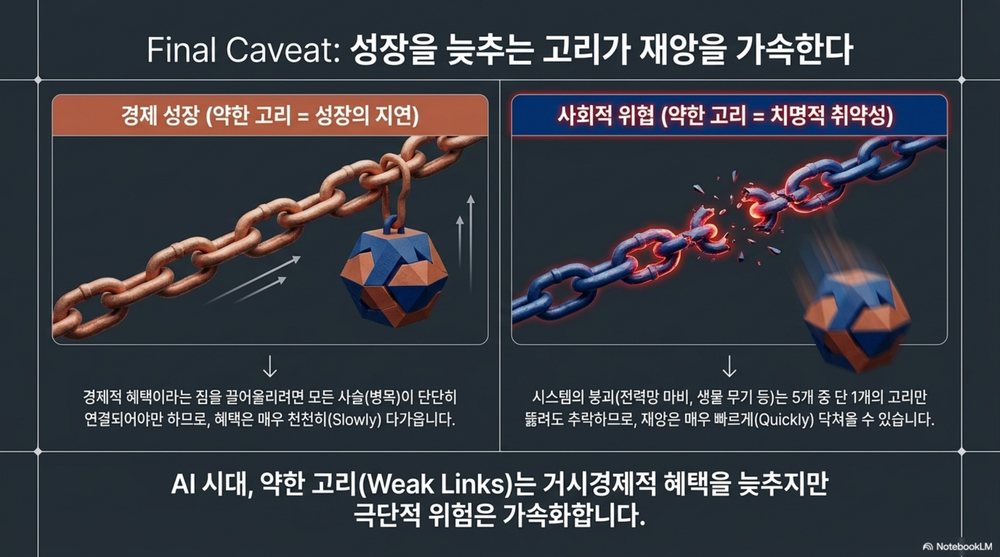
Slide 14
3. 모형의 뼈대
논문은 경제 전체를 “수많은 과제(task)”의 조합으로 본다. 제품 하나를 만들려면 설계, 생산, 검사,
수리, 운송, 판매, 관리가 모두 필요하다. 이 과제들은 서로 대체재가 아니라 보완재에 가깝다.
그래서 어느 한 과제가 충분히 공급되지 않으면 전체 산출이 막힌다.
Yt = Zt
[ ∫01 αiYit(σ-1)/σ di ]σ/(σ-1), σ < 1
전체 산출 Y는 여러 과제 Yᵢ의 조합이다. σ가 1보다 작으면 과제들이 강한 보완재가 되어 약한 고리가 중요해진다.
Yit = ψkitKit + ψℓitLit각 과제는 기계 K 또는 노동 L로 수행할 수 있다. 자동화란 어떤 과제를 노동에서 기계로 넘기는 것이다.
기호
쉬운 의미
논문에서 중요한 이유
Y
GDP 또는 산출
AI가 최종적으로 높이고 싶은 대상
Yi
개별 과제의 산출
느린 과제가 전체를 제약하는 약한 고리
ψk
기계가 과제를 수행하는 생산성
AI와 로봇, 소프트웨어가 빨리 개선되는 영역
ψℓ
사람이 과제를 수행하는 생산성
논문은 초기값을 연 0.5%로 둔다
β
기계가 맡는 과제의 비중
1950년 28%에서 2023년 75%로 보정
σ
과제 간 대체 가능성
σ=0.2이면 약한 고리 효과가 강하다
4. 핵심 공식
4.1 자동화 조건
ψkit / ψℓit = rt / wt
기계가 사람보다 충분히 싸고 효율적이면 그 과제는 자동화된다.
4.2 직접 전환 효과는 0
smooth automation ⇒ direct TFP effect = 0
막 자동화되는 순간에는 사람 비용과 기계 비용이 같기 때문에, 그 순간 자체는 TFP를 올리지 않는다.
4.3 기계 생산성 우위
ψ̂k - ψ̂ℓ = 3.8%p 또는 10.7%p
역사적 민간 비즈니스 기준은 3.8%p, 컴퓨터 산업 기준은 10.7%p다.
4.4 아이디어 생산함수
Q̇t = q̄ Rtλ Qtϕ
AI가 R&D 자체를 자동화하면 단순 업무 자동화와 완전히 다른 성장 동학이 생긴다.
4.5 성장 폭발 조건
Φ = λ/(1-ϕ) · [ θℓ + sK*/(1-sK*) · θk ]
Φ가 1보다 작으면 반내생적 성장, 1보다 크면 폭발적 성장 가능성이 생긴다.
4.6 장기 성장률
gy = Φn / (1 - Φ)
“폭발 가능성”과 “곧 폭발”은 같은 말이 아니다. 전환 속도는 별개의 문제다.
5. 역사 데이터
논문은 미국 민간 비즈니스, 농업, 컴퓨터, 자동차, 소매, 소프트웨어를 비교한다. 중요한 관찰은 “기계가 수행하는 과제의 생산성”이 사람보다 훨씬 빠르게 좋아졌다는 점이다.
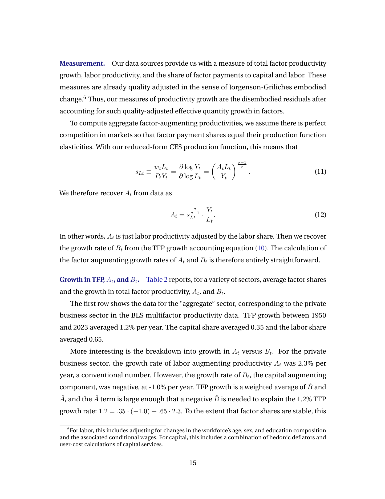
Table 2. 산업별 TFP, 자본증강 생산성, 노동증강 생산성, 요소소득 비중.
Table 2 읽는 법
민간 비즈니스 TFP 성장률은 연 1.2%다.
노동증강 생산성 A는 연 2.3%지만, 자본증강 생산성 B는 -1.0%로 나온다.
이상해 보이지만 논문은 이것을 자동화의 흔적으로 해석한다.
자동화가 진행되면 자본은 더 많은 과제에 나뉘어 투입된다.
핵심은 표면적 TFP보다 “어떤 과제를 누가 수행하게 되었는가”다.
역사적 해석: 성장의 상당 부분은 “기계가 좋아졌다”만이 아니라 “기계가 맡는 과제가 늘었다”에서 나온다.
6. 미래 시나리오
논문에서 자주 오해되는 부분이 95% 자동화와 0.5% 성장률이다. 95%는 역사 데이터가 발견한 마법의 임계값이 아니다. “5%의 과제가 영원히 인간에게 남는다면?”이라는 시나리오다.
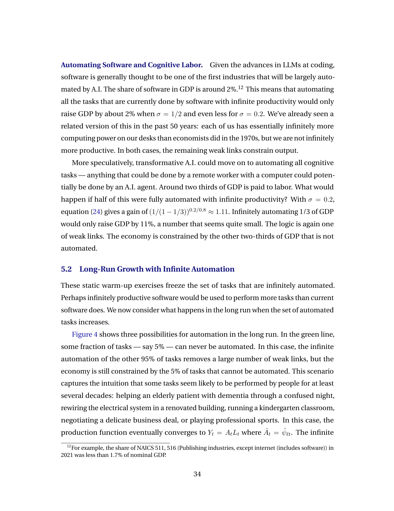
Figure 4. 장기 자동화의 세 가지 가능성.
Figure 4 읽는 법
초록 일부 과제는 끝까지 인간만 수행한다.
보라 모든 과제가 유한 시간 안에 자동화된다.
파랑 인간 과제가 계속 남지만 그 비중은 점점 0에 가까워진다.
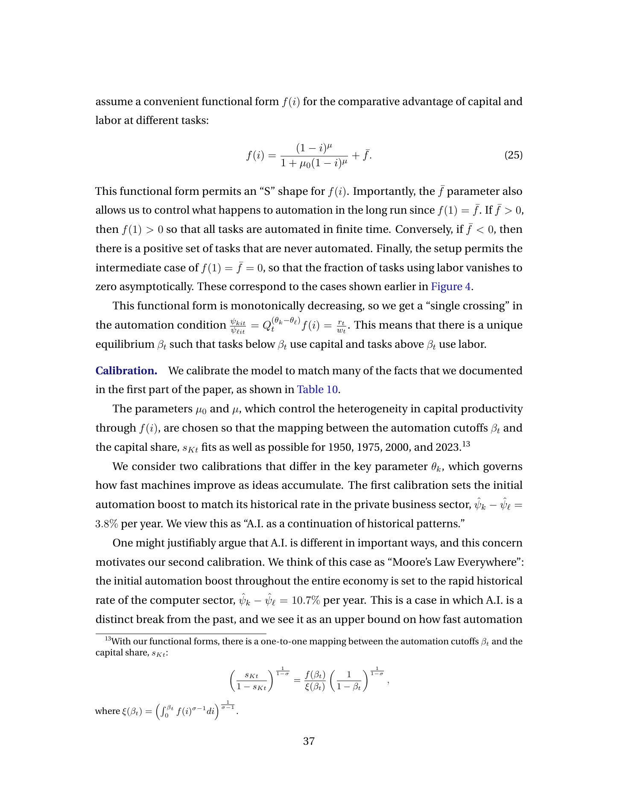
Table 10. 동태모형 보정값.
Table 10 핵심 숫자
자동화 과제 비중 β: 1950년 0.28, 1975년 0.45, 2000년 0.63, 2023년 0.75.
기계의 과제 생산성 우위: 민간 비즈니스 기준 3.8%p, 컴퓨터 산업 기준 10.7%p.
사람이 수행하는 과제의 생산성 증가율: 0.5%.
0.5%는 “GDP 성장률”이 아니라 “남은 인간 과제의 개선 속도”로 해석해야 한다.
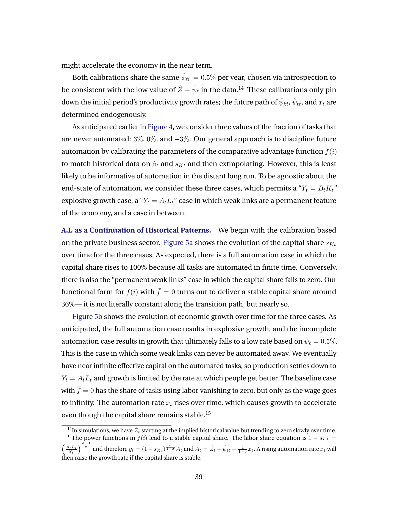
Figure 5. AI가 과거 민간 비즈니스 자동화 패턴의 연장일 때.
Figure 5 읽는 법
기본 성장률은 약 2%에서 시작한다.
역사 패턴을 연장하면 2075년에도 성장률은 약 2.6% 수준이다.
2050년 GDP는 기존 추세보다 약 4% 높을 뿐이다.
거시적으로는 생산성 개선이 매우 천천히 보일 수 있다.
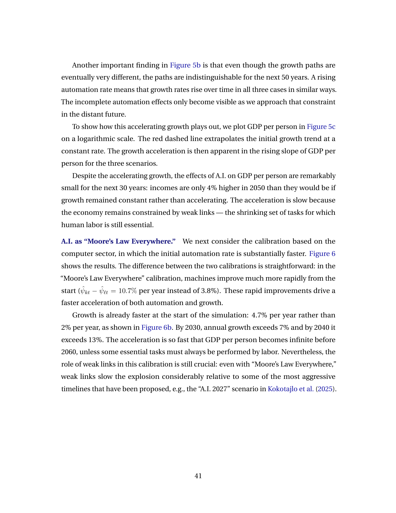
Figure 6. AI가 “Moore’s Law Everywhere”처럼 작동하는 공격적 시나리오.
Figure 6 읽는 법
이 시나리오는 매우 공격적인 상한선에 가깝다.
성장률은 2020년 4.7%, 2030년 7.3%, 2040년 13.0%로 빠르게 올라간다.
모든 과제가 자동화되면 2060년 전후 무한 소득 경로가 나온다.
그래도 즉각 폭발보다 느리다. 이유는 여전히 약한 고리다.
정확한 해석:
“95% 자동화까지 GDP 성장은 0.5%”가 아니다. 정확히는 “일부 인간 과제가 끝까지 남으면,
장기 성장률은 그 인간 과제의 생산성 증가율 0.5%에 가까워질 수 있다”이다.
또한 “75년”은 확정 예측이 아니라, 역사 패턴을 따르는 기본 시나리오에서 성장 경로 차이가 오래 작게 보인다는 의미다.
7. AI와 아이디어 생산
존스 성장론에서 장기 성장은 아이디어가 만든다. 이 논문이 중요한 이유는 AI를 단순한 자동화 도구가 아니라 아이디어 생산함수까지 자동화할 수 있는 기술로 다룬다는 점이다.
자동화 → 더 많은 아이디어 → 더 빠른 기계 개선 → 더 많은 자동화논문은 이것을 flywheel, 즉 자기강화 루프로 본다.
AI의 역할
경제 효과
성장론적 의미
사무·코딩 보조
일부 부문 생산성 상승
약한 고리 때문에 거시 효과는 제한적일 수 있음
소프트웨어 완전 자동화
소프트웨어 비용 급락
소프트웨어가 GDP의 작은 비중이면 전체 GDP 효과는 제한됨
연구개발 자동화
아이디어 생산 속도 상승
성장률 자체가 가속될 수 있음
AI가 더 좋은 AI를 설계
자기강화 루프 형성
Φ > 1이면 폭발적 성장 가능
현장·돌봄·책임 과제는 인간 의존
자동화 효과가 병목에 막힘
성장 폭발이 늦어지거나 사라질 수 있음
8. 반도체 산업에 적용
이 논문은 반도체 연구에도 바로 연결된다. 반도체에서는 AI가 설계, 공정조건 탐색, 결함 분석, 수율 개선, 장비 유지보수, 공급망 의사결정까지 어디를 자동화하는지 보아야 한다.
단순 자동화 지표
자동화율 = AI 또는 기계가 맡는 과제 비중
이 지표만으로는 부족하다. 자동화된 과제가 병목인지, 주변 업무인지가 더 중요하다.
존스식 생산성 지표
혁신생산성 = 기술 성능 향상 / R&D 투입
연구자와 연구비가 늘었는데 성능 개선률이 그대로라면 아이디어 생산성은 하락한 것이다.
반도체 지표
논문 관점의 질문
해석
EDA 자동화율
설계 병목을 실제로 줄였나?
소프트웨어 자동화만으로는 전체 공정 병목이 남을 수 있음
수율 개선 속도
AI가 양산 전환의 약한 고리를 해결했나?
실질 생산성에 직접 연결되는 핵심 지표
공정 세대 전환기간
새 아이디어가 생산으로 전환되는 시간이 줄었나?
아이디어 생산과 실행 자동화가 함께 작동하는지 확인
Capex 대비 비트 생산 증가
자본 투입이 실제 산출로 바뀌었나?
Capacity Conversion Efficiency와 직접 연결
AI 도입 전후 R&D 생산성
AI가 연구생산성 하락을 반전시켰나?
존스 이론의 핵심 검증 지점
9. 요약
첫째, 이 논문은 AI 낙관론과 비관론 사이의 중간 지점을 제시한다. AI가 성장 폭발을 만들 수 있다는 가능성은 인정하지만, 경제 전체가 곧바로 폭발하지는 않는다고 본다.
둘째, 이유는 약한 고리다. 경제는 가장 빠른 부문이 아니라, 아직 자동화되지 않은 필수 과제에 의해 제약된다.
셋째, 0.5%는 전체 GDP 성장률이 아니라 인간이 수행하는 남은 과제의 생산성 개선 속도다.
넷째, 75년은 확정 예측이 아니라 시뮬레이션의 메시지다. 역사적 자동화 패턴을 따르는 경우, 성장 폭발이 매우 늦게 나타나며 초반 수십 년은 기존 추세와 구별하기 어렵다.
다섯째, 진짜 질문은 AI가 아이디어를 만들 수 있는가다. AI가 연구개발과 과학적 발견, 더 나아가 AI 자체의 개선을 자동화하면 성장 공식의 구조가 바뀐다.
여섯째, 반도체 산업에서는 “AI 도입 여부”보다 “AI가 어떤 약한 고리를 제거했는가”를 측정해야 한다.
최종 문장: Jones & Tonetti의 메시지는 “AI는 과장이다”가 아니라 “AI의 거시 생산성 효과는 마지막 병목과 아이디어 생산 자동화 여부에 의해 결정된다”이다.